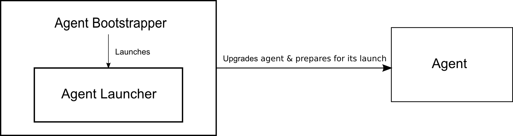

Go Agent is the component of Go which runs the jobs given to it by the Go Server. An Agent comprises of 3 parts, the Agent Bootstrapper, the Agent Launcher and the Agent itself.

The bootstrapper is the only component of a Go agent that requires a manual upgrade, therefore its code is kept to a bare minimum to avoid this manual upgrade.
A new installation of an agent has only the agent-bootstrapper.jar. When you start an agent, it essentially starts the agent-bootstrapper.jar, which does the following:
How does the bootstrapper facilitate automatic upgrade of the launcher and launch it?
The agent-launcher.jar is packaged inside the agent-bootstrapper.jar. When the bootstrapper starts, it starts the launcher by doing the following:
MANIFEST.MF of the agent-launcher.jar. This is done to determine which class needs to be launched from the Launcher.AgentLauncher class.AgentLauncher class.This agent is launched this way inorder to prevent the launcher from being launched as a separate java process while still maintaining it as a component on its own.
The bootstrapper logs to go-agent-bootstrapper.log file.
Once the launcher is launched, it does the following:
md5 checksum of the agent-launcher.jar present locally with the agent-launcher.jar on the Go Server. If the launcher is upgrades itself, it returns and it is then restarted by the bootstrapper.AgentProcessParentImpl, by reading specific keys from MANIFEST.MF of the agent.jar and starting it.The launcher allows for the automatic upgradation of the agent without manual intervention.
The agent launcher logs to the go-agent-launcher.log file.
The agent is responsible for running a job given to it by the server.
The starting point for an agent is the AgentProcessParentImpl. At this point three things happen, agent is downloaded if required (this is done twice - once in the launcher and once at this point, this is to maintain backward compatibility with agents prior to version 2.3, where the launcher module was not present), plugins are downloaded if required, and the agent.jar is launched as a separate java process.
Agents are uniquely identified by the server based on their UUID. Information about all agent instances are stored in-memory on the go server.
At any given time, an agent has to be in one of the following states:
An agent has 3 threads running as part of it:
In most situations, the Go agent services keep running while the server is upgraded. The loop thread checks to see if the agent needs to be upgraded every time it runs. So, the first time the loop thread contacts the server after a server upgrade, it realizes that the agent needs to be upgraded. The agent kills itself as a result of this. The agent launcher then upgrades and restarts the agent.
Agent initialization happens through Spring. The first time the AgentController bean is initialized, it creates the following:
The initial communication, up until registration, between the server and agent happens over HTTP. Once the registration is complete, the communication between the server and agent happens over HTTPS.
Registration of the agent with the server happens when the loop thread is first initialized. Since, a number of agents can contact the server at the same time, the registration process might not be successful the very first time itself. So, the agent keeps trying to register itself every 10 seconds until it is successful.
Agent Side
loop_thread()
agent_registration()
setup_ssl_infrastructure()
retrieve_agent_cookie()
end
Registration of the agent involves setting up the following:
Once the agent requests registration form the server, the server does the following:
Server Side
registration_request_from_agent()
auto_register_agent_if_required()
allAgentInstances.registerNewAgent()
assign_certification()
end
assign_certification()
assign_agent_x509_certificate
assign_agent_trust_store
end
When an agent is initially registered with the server, it is in the pending state until a Go administrator manually enables the agent. This is mainly done to prevent malicious agents from automatically enabling themselves on the server.
Auto Registering Agents
In the case where you want to enable an agent automatically with the server, you can do so by creating the agent-registration.properties file. Through this file you can specify which resources and environments the agent belongs to. When the agent initially tries to register itself with the server, the server checks to see if the incoming request has an agent-registration.properties file auto_register_agent_if_required(), if so then it sets up the agent with the resources and environments specified in this file. The agent will be in the enabled state after this.
Once the agent is enabled on the server, it is by default in the "idle" state, indicating that the agent is not doing any work. The loop thread then requests the server for work.
Server Side
getWork()
if_agent_has_not_been_assigned_work_yet_then
idleAgentsTopic.post(agent_idle_details)
return_no_work
else_if_agent_is_assigned_work
return_work
end
A listener, i.e., the WorkFinder, is registered on the IdleAgentsTopic queue, so when an idle agent detail is added to this queue the following happens:
Server Side
assignWork()
buildAssignmentService.assignWork(agent_details)
Once the server assigns work to the agent, this work is picked up by the agent the next time the loop thread contacts the server, which is 10 seconds later. As such, a JobPlan is provided to the agent, this is a copy of the job that has been configured on the server.
The agent then goes into the "Preparing" state while it is preparing to run the job. It then goes into the "Building" state once it begins to run the job, which happens through BuildWork.
The agent communicates its entire transition, from being assigned a job to completing the job, constantly with the server through the GoPublisher. The output of the task being run is contantly updated in the go-agent.log through the GoControlLog, and this is the information that is available on the console log of the server for that particular task.
The agent logs to the go-agent.log file.